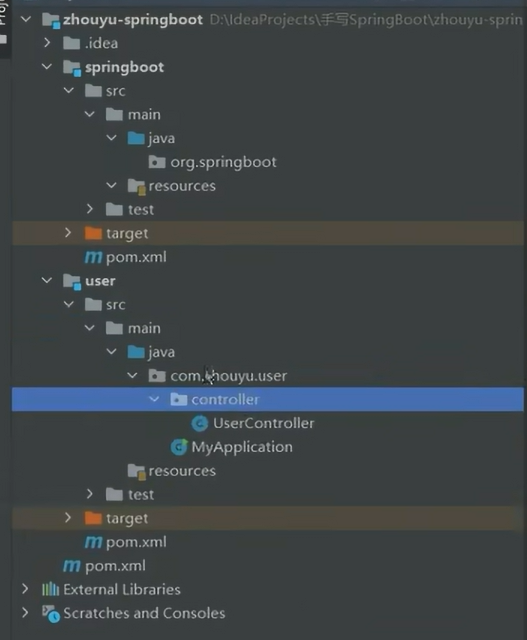
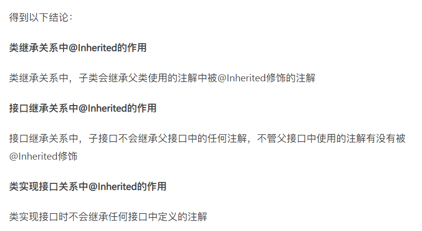
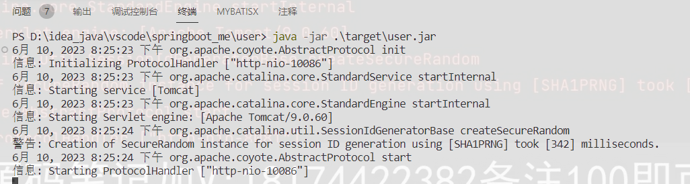
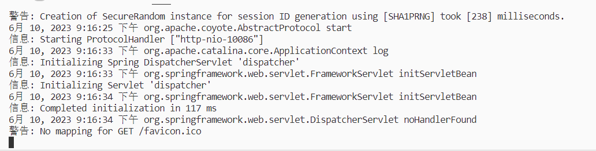
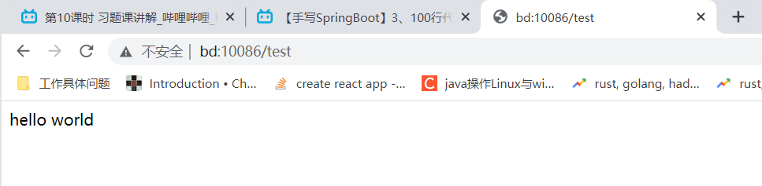
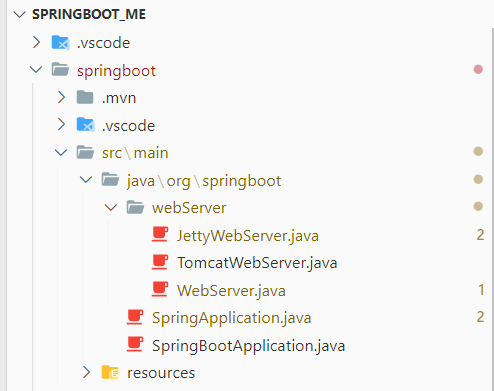
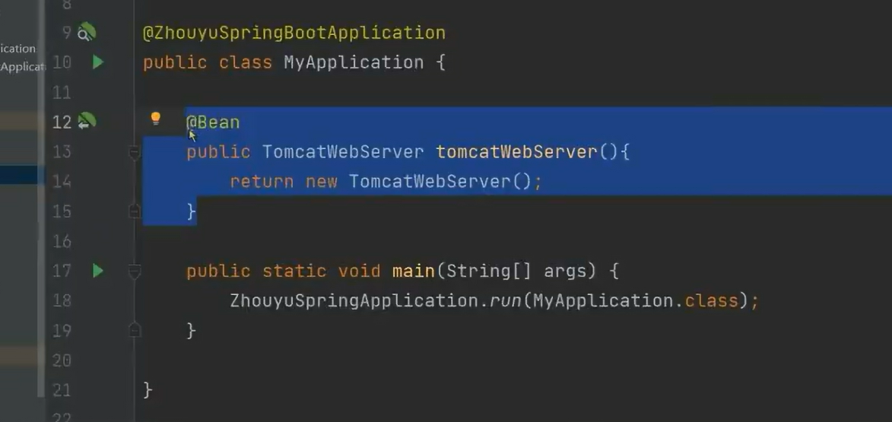
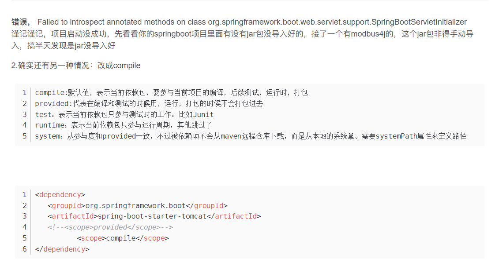

1. 工程介绍

pom.xml(springboot)
<?xml version="1.0" encoding="UTF-8"?>
<project xmlns="http://maven.apache.org/POM/4.0.0"
xmlns:xsi="http://www.w3.org/2001/XMLSchema-instance"
xsi:schemaLocation="http://maven.apache.org/POM/4.0.0 https://maven.apache.org/xsd/maven-4.0.0.xsd">
<modelVersion>4.0.0</modelVersion>
<groupId>org.malred</groupId>
<artifactId>springboot</artifactId>
<version>0.0.1-SNAPSHOT</version>
<name>springboot</name>
<description>own springboot</description>
<properties>
<java.version>11</java.version>
<spring.verion>5.3.18</spring.verion>
<tomcat.version>9.0.60</tomcat.version>
<servlet.version>4.0.1</servlet.version>
</properties>
<dependencies>
<dependency>
<groupId>org.springframework</groupId>
<artifactId>spring-context</artifactId>
<version>${spring.verion}</version>
</dependency>
<dependency>
<groupId>org.springframework</groupId>
<artifactId>spring-web</artifactId>
<version>${spring.verion}</version>
</dependency>
<dependency>
<groupId>org.springframework</groupId>
<artifactId>spring-webmvc</artifactId>
<version>${spring.verion}</version>
</dependency>
<dependency>
<groupId>org.springframework</groupId>
<artifactId>spring-aop</artifactId>
<version>${spring.verion}</version>
</dependency>
<dependency>
<groupId>org.apache.tomcat.embed</groupId>
<artifactId>tomcat-embed-core</artifactId>
<version>${tomcat.version}</version>
</dependency>
<dependency>
<groupId>javax.servlet</groupId>
<artifactId>javax.servlet-api</artifactId>
<version>${servlet.version}</version>
</dependency>
</dependencies>
</project>
pom.xml(user)
2. java代码启动tomcat

创建@SpringBootApplication注解和SpringApplication类(run方法)
@SpringBootApplication
package org.springboot;
import java.lang.annotation.*;
@Target(ElementType.TYPE) // 该注解可以加到类上
@Retention(RetentionPolicy.RUNTIME) // 运行时(可以被反射获取)
@Documented // 自动生成文档
@Inherited // 继承注解
public @interface SpringbootApplication {
}
SpringApplication.java
package org.springboot;
public class SpringApplication {
public static void run(Class clazz) {
}
}
user的main方法里使用
使用自己本地的maven项目 -> 1. 被依赖的项目执行 mvn install 安装到本地目录 -> 2. 其他项目(user)引入该项目 ->
3. 打包项目(user) mvn package -> 4. 在target里找到该项目的jar, java -jar xxx.jar 运行
package com.example.user;
import org.springboot.*;
@SpringBootApplication
public class UserApplication {
public static void main(String[] args) {
SpringApplication.run(UserApplication.class);
}
}
在run方法里启动tomcat
SpringApplication.java
package org.springboot;
import org.apache.catalina.Engine;
import org.apache.catalina.Host;
import org.apache.catalina.Service;
import org.apache.catalina.LifecycleException;
import org.apache.catalina.Server;
import org.apache.catalina.Context;
import org.apache.catalina.connector.Connector;
import org.apache.catalina.core.StandardContext;
import org.apache.catalina.core.StandardEngine;
import org.apache.catalina.core.StandardHost;
import org.apache.catalina.startup.Tomcat;
public class SpringApplication {
public static void run(Class clazz) {
// 启动tomcat (jetty,undertow等web容器)
startTomcat();
}
private static void startTomcat() {
Tomcat tomcat = new Tomcat();
Server server = tomcat.getServer();
Service service = server.findService("Tomcat");
Connector connector = new Connector();
connector.setPort(10086);
Engine engine = new StandardEngine();
engine.setDefaultHost("localhost");
Host host = new StandardHost();
host.setName("localhost");
String contextPath = "";
Context context = new StandardContext();
context.setPath(contextPath);
context.addLifecycleListener(new Tomcat.FixContextListener());
host.addChild(context);
engine.addChild(host);
service.setContainer(engine);
service.addConnector(connector);
try {
tomcat.start();
} catch (LifecycleException e) {
e.printStackTrace();
}
}
}
在user项目里使用,看能否启动tomcat
先mvn install 我们写的springboot,然后mvn package 这个user项目

3. 100行代码模拟极简版springboot
SpringApplication.java
给tomcat添加dispatcher
package org.springboot;
import org.apache.catalina.Context;
import org.apache.catalina.Engine;
import org.apache.catalina.Host;
import org.apache.catalina.LifecycleException;
import org.apache.catalina.Server;
import org.apache.catalina.Service;
import org.apache.catalina.connector.Connector;
import org.apache.catalina.core.StandardContext;
import org.apache.catalina.core.StandardEngine;
import org.apache.catalina.core.StandardHost;
import org.apache.catalina.startup.Tomcat;
import org.springframework.web.context.WebApplicationContext;
import org.springframework.web.context.support.AnnotationConfigWebApplicationContext;
import org.springframework.web.servlet.DispatcherServlet;
public class SpringApplication {
public static void run(Class clazz) {
// 创建spring容器
AnnotationConfigWebApplicationContext applicationContext = new AnnotationConfigWebApplicationContext();
// 注册配置类(这里用的是传入的那个类,也就是我们springboot项目的启动类)
applicationContext.register(clazz);
// 启动spring容器
applicationContext.refresh();
// 启动tomcat (jetty,undertow等web容器)
startTomcat(applicationContext);
}
/**
* 启动tomcat
* @param applicationContext spring容器,可以获得带controller注解的bean
*/
private static void startTomcat(WebApplicationContext applicationContext) {
Tomcat tomcat = new Tomcat();
Server server = tomcat.getServer();
Service service = server.findService("Tomcat");
Connector connector = new Connector();
connector.setPort(10086);
Engine engine = new StandardEngine();
engine.setDefaultHost("localhost");
Host host = new StandardHost();
host.setName("localhost");
String contextPath = "";
Context context = new StandardContext();
context.setPath(contextPath);
context.addLifecycleListener(new Tomcat.FixContextListener());
host.addChild(context);
engine.addChild(host);
service.setContainer(engine);
service.addConnector(connector);
// 处理中心
tomcat.addServlet(
contextPath,
"dispatcher",
new DispatcherServlet(applicationContext)
);
// dispatcherServlet处理所有请求
context.addServletMappingDecoded("/*", "dispatcher");
try {
tomcat.start();
} catch (LifecycleException e) {
e.printStackTrace();
}
}
}
SpringBootApplication.java
添加扫描注解,启动类添加了SpringBootApplication注解,传入spring容器(通过SpringApplication的run方法),
注解解析,也会解析到这个扫描注解,默认扫描有该扫描注解的类的包路径
package org.springboot;
import java.lang.annotation.*;
import org.springframework.context.annotation.ComponentScan;
@Target(ElementType.TYPE) // 该注解可以加到类上
@Retention(RetentionPolicy.RUNTIME) // 运行时(可以被反射获取)
@Documented // 自动生成文档
@Inherited // 继承注解
@ComponentScan // 如果没有配置,会默认解析有该注解的类的包路径
public @interface SpringBootApplication {
}
user
controller/UserController.java
package com.example.user.controller;
import org.springframework.web.bind.annotation.GetMapping;
import org.springframework.web.bind.annotation.RestController;
@RestController
public class UserController {
@GetMapping("/test")
public String test() {
return "hello world";
}
}
UserApplication.java
package com.example.user;
import org.springboot.*;
// 这个类作为配置类传入spring容器,spring容器解析该类的注解
@SpringBootApplication
public class UserApplication {
// 如果有@Bean也会被解析为bean
public static void main(String[] args) {
SpringApplication.run(UserApplication.class);
}
}
启动


4. 手写模拟实现多态webServer
此时是写死了只能用tomcat,如何可以动态使用其他的
webServer

定义一个带start方法的接口,不同实现类用不同web容器实现start内部逻辑
添加jetty依赖
<dependency>
<groupId>org.eclipse.jetty</groupId>
<artifactId>jetty-server</artifactId>
<version>${jetty.version}</version>
</dependency>
WebServer.java
package org.springboot.WebServer;
public interface WebServer {
public void start();
}
TomcatWebServer.java
package org.springboot.WebServer;
public class TomcatWebServer implements WebServer {
@Override
public void start() {
}
}
此时,如果要切换不同的web容器,可以由用户来@Bean指定用哪个实现类,但是这样还是很麻烦

5. 模拟WebServer自动配置类
WebServerAutoConfiguration.java
package org.springboot.webServer;
import org.springboot.webServer.Conditional.JettyConditional;
import org.springboot.webServer.Conditional.TomcatConditional;
import org.springframework.context.annotation.Bean;
import org.springframework.context.annotation.Conditional;
import org.springframework.context.annotation.Configuration;
@Configuration
// 创建Bean,创建不同web容器
public class WebServerAutoConfiguration {
@Bean
@Conditional(TomcatConditional.class) // 为该bean的生效添加条件
public TomcatWebServer tomcatWebServer() {
return new TomcatWebServer();
}
@Bean
@Conditional(JettyConditional.class)
public JettyWebServer jettyWebServer() {
return new JettyWebServer();
}
}
依赖传递控制
控制依赖的传递,防止子工程因为两个依赖都有而有多个WebServer实例从而报错(我们自己添加的判断)
springboot: pom.xml
<dependency>
<groupId>org.eclipse.jetty</groupId>
<artifactId>jetty-server</artifactId>
<version>${jetty.version}</version>
<!-- 依赖传递控制(不会传给子工程) -->
<optional>true</optional>
</dependency>
注册bean的条件类
JettyConditional
package org.springboot.webServer.Conditional;
import org.springframework.context.annotation.Condition;
import org.springframework.context.annotation.ConditionContext;
import org.springframework.core.type.AnnotatedTypeMetadata;
/**
* 自动配置类JettyWebServer的bean的生效条件
*/
public class JettyConditional implements Condition {
@Override
public boolean matches(
ConditionContext context,
AnnotatedTypeMetadata metadata
) {
// 加载类,如果没有表示没有jetty依赖
try {
context.getClassLoader().loadClass("org.eclipse.jetty.server.Server");
return true;
} catch (ClassNotFoundException e) {
return false;
}
}
}
TomcatConditional
package org.springboot.webServer.Conditional;
import org.springframework.context.annotation.Condition;
import org.springframework.context.annotation.ConditionContext;
import org.springframework.core.type.AnnotatedTypeMetadata;
/**
* 自动配置类TomcatWebServer的bean的生效条件
*/
public class TomcatConditional implements Condition {
@Override
public boolean matches(
ConditionContext context,
AnnotatedTypeMetadata metadata
) {
// 加载类,如果没有表示没有tomcat依赖
try {
context.getClassLoader().loadClass("org.apache.catalina.startup.Tomcat");
return true;
} catch (ClassNotFoundException e) {
return false;
}
}
}
在@SpringBootApplication注解中导入自动配置类
package org.springboot;
import java.lang.annotation.*;
import org.springboot.webServer.WebServerAutoConfiguration;
import org.springframework.context.annotation.ComponentScan;
import org.springframework.context.annotation.Import;
@Target(ElementType.TYPE) // 该注解可以加到类上
@Retention(RetentionPolicy.RUNTIME) // 运行时(可以被反射获取)
@Documented // 自动生成文档
@Inherited // 继承注解
@ComponentScan // 如果没有配置,会默认解析有该注解的类的包路径
@Import(WebServerAutoConfiguration.class) // 导入自动配置类
public @interface SpringBootApplication {
}
user项目的pom.xml需要将依赖改为scope才能加载到自动配置类(遇到bug,网上找的方案,原理不明)

<dependencies>
<dependency>
<groupId>org.malred</groupId>
<artifactId>springboot</artifactId>
<version>0.1.0</version>
<!-- 要改为这个才能加载自动配置类 -->
<scope>compile</scope>
</dependency>
</dependencies>
6. 模拟springboot条件注解
我们的tomcat和jetty的依赖判断可以抽象为一个条件类,传入string(全类名),判断这个string是否可以被加载到
MalredConditionalOnClass
package org.springboot.webServer.Conditional;
import java.lang.annotation.ElementType;
import java.lang.annotation.Retention;
import java.lang.annotation.RetentionPolicy;
import java.lang.annotation.Target;
import org.springframework.context.annotation.Conditional;
@Target({ ElementType.TYPE, ElementType.METHOD })
@Retention(RetentionPolicy.RUNTIME)
@Conditional(ClassExistedCondition.class)
public @interface MalredConditionalOnClass {
String value();
}
ClassExistedCondition
package org.springboot.webServer.Conditional;
import java.util.Map;
import org.springframework.context.annotation.Condition;
import org.springframework.context.annotation.ConditionContext;
import org.springframework.core.type.AnnotatedTypeMetadata;
public class ClassExistedCondition implements Condition {
@Override
public boolean matches(
ConditionContext context,
AnnotatedTypeMetadata metadata
) {
// 获取要加载的类
Map<String, Object> annotationAttributes = metadata.getAnnotationAttributes(
MalredConditionalOnClass.class.getName()
);
String className = (String) annotationAttributes.get("value");
// 加载类,如果没有表示没有jetty依赖
try {
context.getClassLoader().loadClass(className);
return true;
} catch (ClassNotFoundException e) {
return false;
}
}
}
WebServerAutoConfiguration
package org.springboot.webServer;
import org.springboot.webServer.Conditional.MalredConditionalOnClass;
import org.springframework.context.annotation.Bean;
import org.springframework.context.annotation.Configuration;
@Configuration
// 创建Bean,创建不同web容器
public class WebServerAutoConfiguration {
@Bean
@MalredConditionalOnClass("org.apache.catalina.startup.Tomcat")
public TomcatWebServer tomcatWebServer() {
return new TomcatWebServer();
}
@Bean
@MalredConditionalOnClass("org.eclipse.jetty.server.Server")
public JettyWebServer jettyWebServer() {
return new JettyWebServer();
}
}
7. 模拟springboot的AutoConfigurationImportSelector
添加一个声明自动配置类的类,通过一个方法返回所有要加载的自动配置类
package org.springboot;
import java.util.ArrayList;
import org.springboot.webServer.WebServerAutoConfiguration;
import org.springframework.context.annotation.DeferredImportSelector;
import org.springframework.core.type.AnnotationMetadata;
public class AutoConfigurationImportSelector implements DeferredImportSelector {
/**
* 返回所有要自动配置的类的名字,实现批量导入配置
*/
@Override
public String[] selectImports(AnnotationMetadata importingClassMetadata) {
// springboot默认+第三方jar 的自动配置类名字
// jars -> META-INF/spring.factories.EnableAutoConfiguration
ArrayList<String> autos = new ArrayList<>();
autos.add(WebServerAutoConfiguration.class.getName());
String[] array = (String[]) autos.toArray();
return array;
}
}